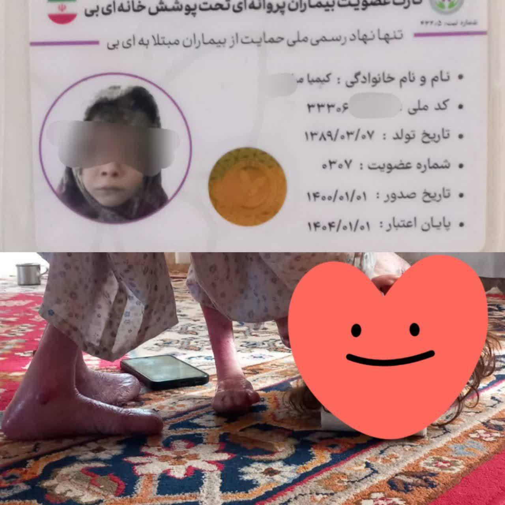

با هم دعای فرج را برای سلامتی و فرج آقا امام زمان(عج) میخوانیم
با هم دعای فرج را برای سلامتی و فرج آقا امام زمان(عج) میخوانیم با قرائت دعای فرج به این جمع میلیونی بپیوندیم
با قرائت دعای فرج به این جمع میلیونی بپیوندیم


چله علم النور2-روز سی و چهارم
Forwarded from

کیمیا؛ دختر پروانهای که بالاش شکسته…
دختر نازنینی از روستاهای اسلامآباد که با بیماری پروانهای (EB) دستوپنجه نرم میکنه؛ همون بیماری که پوستش مثل بال پروانه نازک و شکنندهست…
مادرش رو از دست داده، پدرش هم بهخاطر کمردرد شدید از کار افتادهست، و حالا فقط مادربزرگ پیرش مراقبشه.
حمایتهایی که ازشون میشه اصلا کافی نیست.
کیمیا به حمایت فوری نیاز داره…
دستهای مهربونت رو به سمتش دراز کن
تا بتونه کمی آرومتر زندگی کنه…
شماره کارت موسسه خیریه نیک:
(برای کپی کلیک کنید)
شبا:
پرداخت از طریق درگاه بادصبا
پرونده کیمیا | لینک مجوزها
پروندههای تسویهشده | تلگرام نیک
معرفی پروندههای مشابه:
@Pr_nikcharity
دختر نازنینی از روستاهای اسلامآباد که با بیماری پروانهای (EB) دستوپنجه نرم میکنه؛ همون بیماری که پوستش مثل بال پروانه نازک و شکنندهست…
مادرش رو از دست داده، پدرش هم بهخاطر کمردرد شدید از کار افتادهست، و حالا فقط مادربزرگ پیرش مراقبشه.
حمایتهایی که ازشون میشه اصلا کافی نیست.
کیمیا به حمایت فوری نیاز داره…
دستهای مهربونت رو به سمتش دراز کن
تا بتونه کمی آرومتر زندگی کنه…
شماره کارت موسسه خیریه نیک:
در صورتخطایمحدودیتتراکنشاز سوی بانک مرکزی از شماره کارت های بعدی استفاده کنید
(برای کپی کلیک کنید)
60376919904912015892107046740463
5892107046740430شبا:
IR330190000000216777652000پرداخت از طریق درگاه بادصبا
پرونده کیمیا | لینک مجوزها
پروندههای تسویهشده | تلگرام نیک
معرفی پروندههای مشابه:
@Pr_nikcharity
خیریه نیک برای کمک رسانی در زمینه های دارو و درمان کودکان و کمک معیشتی فعالیت می کند. مازاد هزینههای دریافتی در مسیر اهداف خیریه و کودکان دیگر هزینه میشود.
基米娅，破甲的蝴蝶女孩。 我…… 一个来自伊斯兰堡农村的可爱女孩，她正在与蝴蝶病（EB）作斗争，这种疾病的皮肤像蝴蝶的翅膀一样薄而脆弱。 她失去了母亲，父亲因严重的背痛而残疾，现在只有她年迈的祖母在照顾她。 他们得到的支持还不够。 吉米需要立即支持。 伸出你善良的双手。 所以他可以活得慢一点。 尼克慈善卡号码： 如果中央银行的交易限制错误，请使用以下卡号。 （点击复制） 6037691990491201 5892107046740463 5892107046740430 晚上： IR330190000000216777652000 通过巴德萨巴港付款 基米亚案 | 权限链接 已结案的案件 | 尼克的电报 介绍类似案例： @Pr_尼克斯慈善 尼克的慈善机构致力于在医学、儿童治疗和生计援助领域提供帮助。盈余用于资助其他慈善机构和儿童事业。


 تعهد یعنی ماندن ، حتی وقتی همه می روند*
تعهد یعنی ماندن ، حتی وقتی همه می روند* سایت
سایت


 پاسخ قشنگ یک مدیر نفتی به سوال مجری صداوسیما درباره حقوقهای نجومی:
پاسخ قشنگ یک مدیر نفتی به سوال مجری صداوسیما درباره حقوقهای نجومی: مدیرعامل شرکت نفت و گاز پارس در برنامه زنده صبحگاهی شبکه سه سیما در پاسخ به سوال مجری برنامه در خصوص حقوقهای نجومی گفت:
مدیرعامل شرکت نفت و گاز پارس در برنامه زنده صبحگاهی شبکه سه سیما در پاسخ به سوال مجری برنامه در خصوص حقوقهای نجومی گفت:


 غرفهی کتابهای کودک و نوجوان در سالن ناشران کودک و نوجوان شمالی، راهروی فرعی ۶، غرفهی ۷۳
غرفهی کتابهای کودک و نوجوان در سالن ناشران کودک و نوجوان شمالی، راهروی فرعی ۶، غرفهی ۷۳